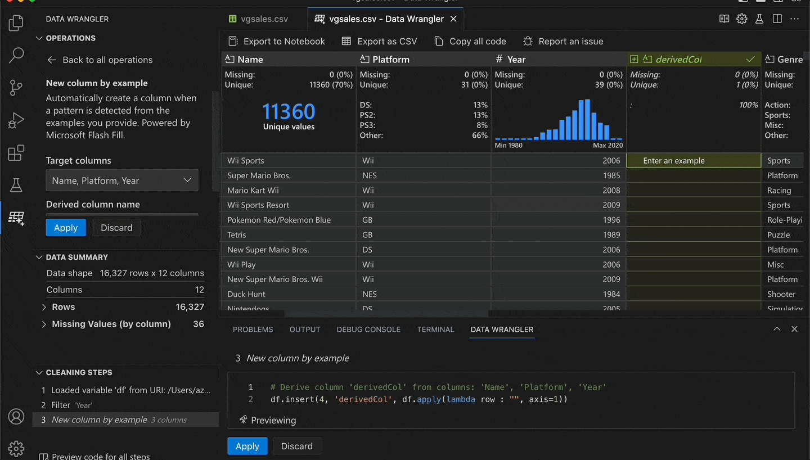

Associate Teaching Professor
Carnegie Mellon University
Microsoft recently released a new product, Data Wrangler, that I worked on with a fantastic team of developers, PMs, designers, and researchers. You can download it as a VS Code extension that works well with Jupyter Notebooks.
Studies show that data scientists spend a lot of time cleaning and preparing data (Muller et al. CHI'19, Chattopadhyay et al. CHI'20). They report that it is tedious, repetitive, and error-prone.
Towards improving this experience, Data Wrangler provides a rich GUI that generates Pandas code for common operations and enables you to visually preview the effect on your data. When you're done, you can export the code to a notebook.
Let's try one of the built-in operations, New Column by Example. It lets you give examples of how you want your data to ultimately look, then it uses AI to figure out the pattern and apply it to the remaining rows.
To demonstrate, I'll open a dataset of video game sales. Next, I select the columns that I want to derive from: Name, Platform, and Year. Then I go to a row and provide an example of what I want the result to be: Tetris (GB, 1989). Lastly, I press enter and the AI extrapolates the other rows based on my example.
I effectively concatenated the three columns with additional formatting. But without writing any code! See this in action:
In this scenario, providing one example was enough. In other cases, you might need to provide two or three examples if there is ambiguity. You can verify the generated Python code or even modify it based on your needs.
Data Wrangler has many more operations too: one-hot encoding, multi-label binarizer, drop missing values, group by column, split text, DateTime formatting by example, etc.
Want to give it a try? Download it from the VS Code marketplace or explore the GitHub repo.
Please leave us feedback with any feature requests or questions you have. More soon!